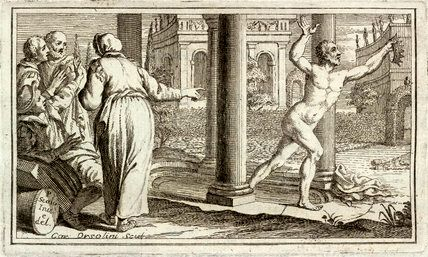

9SPA X Wijnwerk — bi/bye Business:Conditions
*Eureka! is what Archimedes yelled when he understood how to measure the volume of irregular objects, noticing that the water level rose when he stepped into the bathtub. Eureka! Since then signifies the euphoric feeling of having a profound insight.
Insights and discoveries are fundamental to the scientific process, but remain unnoticed without being transformed into the currency of academic business conditions: a scientific article, grant money, positions, better positions, and tenure. The euphoric Eureka! yet often quickly dissipates through the process of publishing and disseminating science, via self-promotion and public speaking.
Art, as science, is about transforming ideas, elusive and beautiful thoughts, into ways of expression. The need to show and to sell, to sustain the art work, risks that the business conditions oust the core of the art's very existence.

At this special SPA X Wijnwerk we expose Bi/Bye/Buy-conditions (business conditions forming our work and income). Moving from our living room into the public, we explored the space in between social and commercial, private and professional, awkwardness and fun.
What brings us together is the desire to learn, link, like and let loose. What will remain is a constellation of WORK(s) intertwining ideas and people: maps, graphs, poems, papers, pamphlets, models, images, pricelists, schedules, photos, paintings, films, transformed Eurekas!* tied by Ariadne’s thread, fugitive pairing towards a social figuration.
Human connection is what we sought, and human connection is what we created! I'm increasingly aware of how making yourself vulnerable, being quirky, goofy, showing some edges allows others to open up, join in and feel connected. We had a magical afternoon and evening that I will continue to reflect on.